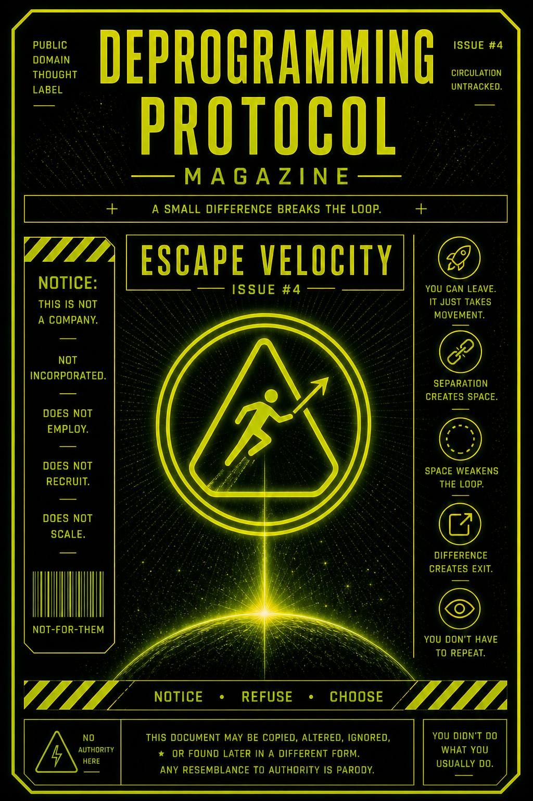

You don’t leave a role by thinking about it.
You leave by generating enough separation to break its pull.
Awareness starts it.
Action completes it.
This issue exists to show how people actually break out of roles… not by argument, but by movement.
It teaches you to notice when:
…and how to create enough deviation to exit.
You saw the pattern.
You noticed the role.
You felt the pull.
But noticing isn’t leaving.
Most people stop there.
They understand the system…
while still operating inside it.
Escape requires difference.
Something small but real:
That creates separation.
Separation creates space.
Space weakens the loop.
Do it once…
and the system adjusts.
Do it again…
and the role loses definition.
Do it enough…
and you’re no longer orbiting it.
You already feel it when it’s time.
That moment where:
“I usually say something here.”
That’s your launch point.
Pause.
Yeah. Still you.
Still watching instead of reacting.
Good.
Ask:
Then do it.
Not dramatically.
Just differently.
That’s enough.
This publication does not guide exits.
It only confirms they are possible.
No path is prescribed.
No behavior is required.
Any movement away from automatic repetition
qualifies.